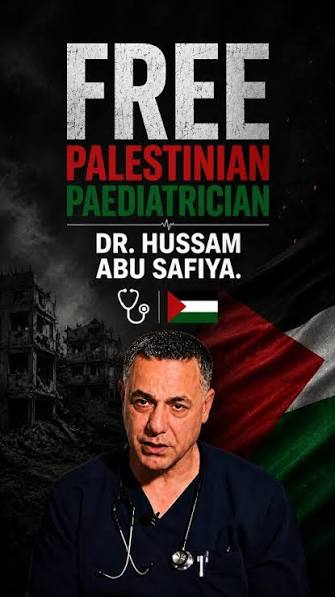

Dr. Hussam Abu Safiya at Kamal Adwan Hospital.
Introducing Doc Safiya
Dr. Hussam Abu Safiya is a Palestinian pediatrician and neonatologist whose unwavering commitment to caring for children has made him a widely recognized figure both in Gaza and around the world. For decades, he dedicated his medical career to treating newborns and children, often working under conditions that would challenge even the most experienced healthcare professionals.
As the director of Kamal Adwan Hospital in northern Gaza, Dr. Abu Safiya became a symbol of medical professionalism, compassion, and resilience during one of the most difficult periods in the region's recent history. Throughout the conflict, he remained at his hospital despite repeated threats, shortages of medicine and equipment, and the constant danger posed by ongoing military operations.
Born in the Jabalia refugee camp to a family displaced during the 1948 Arab-Israeli War, Dr. Abu Safiya pursued his medical education in Kazakhstan before returning to Gaza to serve his community. He later specialized in pediatrics and neonatology, earning Palestinian board certification and becoming one of the leading physicians caring for the region's youngest and most vulnerable patients.
His dedication extended beyond clinical medicine, as he also helped strengthen neonatal and pediatric services throughout Gaza while mentoring younger healthcare professionals. During the Gaza conflict, Dr. Abu Safiya became internationally known through his public appeals describing the humanitarian challenges facing hospitals and the desperate need to protect patients, medical staff, and healthcare facilities.
His interviews and statements provided firsthand accounts of the conditions inside Kamal Adwan Hospital, where doctors and nurses continued treating injured civilians despite severe shortages of electricity, fuel, medical supplies, and staff. Many international medical organizations and humanitarian groups highlighted his efforts as an example of physicians continuing their ethical duty to care for patients under extraordinary circumstances.